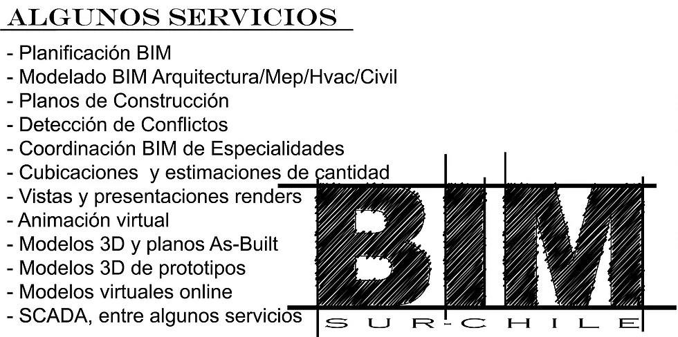

El equipo de trabajo BIMSURCHILE se compone por profesionales de las diferentes áreas que intervienen en la construcción; Diseñador, Arquitecto, Ingeniero Mecánico, Ingeniero Civil, Constructor Civil y Dibujante, que son los encargados de dar solución a diferentes problemas que existen en las diferentes obras trabajando de manera mancomunada en el proyecto aportando ideas y soluciones en los procesos que componen trabajar en la metodología BIM pudiendo generar un estudio acabado de las propuestas y desarrollar un modelo tridimensional de construcción y así prever errores que se pudiesen presentar en la obra estando siempre un paso adelante en la construcción o proyecto a ejecutar. Los servicios que BIM SUR - CHILE prestan son.
Proyectos de arquitectura - Ingeniería - diseño industrial - BIM - modelos tridimensionales, traspasar modelos bidimensionales a tridimencionales - simulación de proyectos - BIM-4D: El tiempo añadido al modelado de información de construcción - Impresiones 3d modelos maquetas fisicas entre otros. El coste de un modelo BIM se va definir por el LOD que nesecite el cliente. LOD es un término acuñado por el Instituto Americano de Arquitectura (AIA o American Institute of Architects) durante el BIMForum de 2011. Resumiendo, LOD podría definirse como una escala que informa hasta qué punto se ha desarrollado un elemento del modelo (geometría + información) y de este concepto de valorar "para qué sirve la información representada" es importante, mide la cantidad de información y la calidad de información, es una forma de ponderar la veracidad de la información representada, debe haber información suficiente para satisfacer ponderar el nivel de LOD de cada trabajo.
De esta forma surgen el siguiente escalado de calidades de acabado:
LOD 100- Es un diseño conceptual , el modelo aportará una visión general, básicamente aportará el volumen, la orientación y área.
LOD 200- Aporta una visión general con información de magnitudes aproximadas, tamaño, forma, localización y orientación. El uso que se da es simplemente incrementar la capacidad de análisis. Pero las mediciones son aproximados, nunca definitivas.
LOD 300- Aporta información y geometría precisa, pendiente de algún detalle constructivo y aporta medidas más precisas que LOD 200 en caso de LOD300, con un nivel de detalle externo importante pero no completo.
LOD 400- Contiene el detalle necesario para la fabricación o construcción y el nivel de mediciones es exacto.
LOD 500- El último nivel de desarrollo representa el proyecto, ya que se ha construido , son las condiciones conforme a obra. El modelo es adecuado para el mantenimiento y el funcionamiento de la instalación.
LOD, es el nivel de complejidad del modelo pero también tenemos las D que van desde 1D hasta las 7D del modelo y su descripción de cada un es :
1D =La idea:
Partimos de una idea -una vivienda por ejemplo- y definimos las condiciones iniciales, la localización; realizamos unas primeras estimaciones -superficie, volumetría y costes-; establecemos el plan de ejecución, etc.
2D =El boceto:
Preparamos el software para modelar; planteamos los materiales; definimos las cargas estructurales y energéticas; y establecemos las bases para la sostenibilidad del proyecto.
3D =Modelo de información del edificio:
A partir de toda la información recopilada se genera el modelo 3D que nos servirá como base para el resto del ciclo de vida del proyecto. Es más que una representación gráfica de la idea. El modelo 3D no solo es algo visual, sino que incorpora toda la información que se necesitará para las siguientes fases -dimensiones- BIM.
4D =Tiempo:
A lo que hasta ahora podría considerarse algo estático se le aporta la dimensión del tiempo. De modo que podemos definir las fases del proyecto, establecer su planificación temporal; así como realizar simulaciones de parámetros temporales -ciclo de vida, sol, viento, energía, etc.-
5D =Coste:
Se trata del control de costes y estimación de gastos del proyecto. El principal objetivo de esta dimensión es mejorar la rentabilidad del proyecto.
6D =Simulación:
En ocasiones llamada Green BIM o BIM verde, consiste en simular las posibles alternativas del proyecto para finalmente llegar a la alternativa óptima. Y todo ello antes de ‘colocar el primer ladrillo’.
7D =Manual de instrucciones:
Podría decirse que se trata del manual que hay que seguir durante la vida del proyecto, una vez construido, para el uso y mantenimiento del mismo -inspecciones, reparaciones, mantenimientos, etc.-